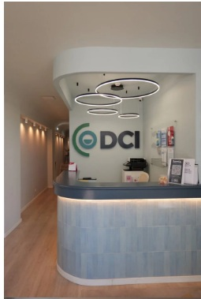
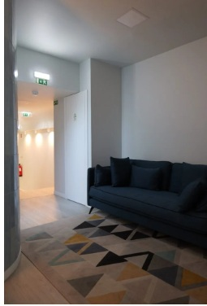
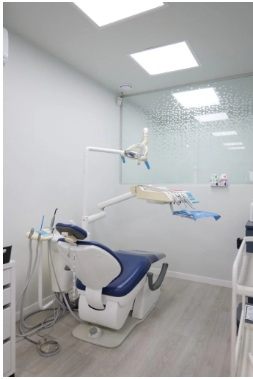
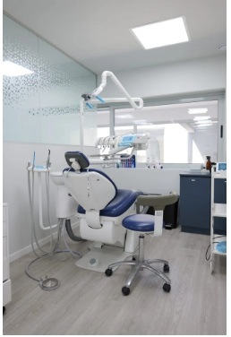
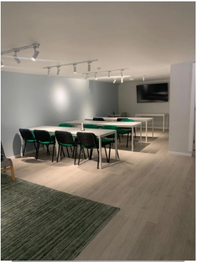
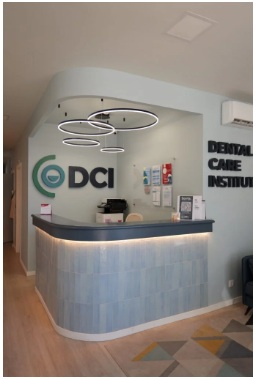
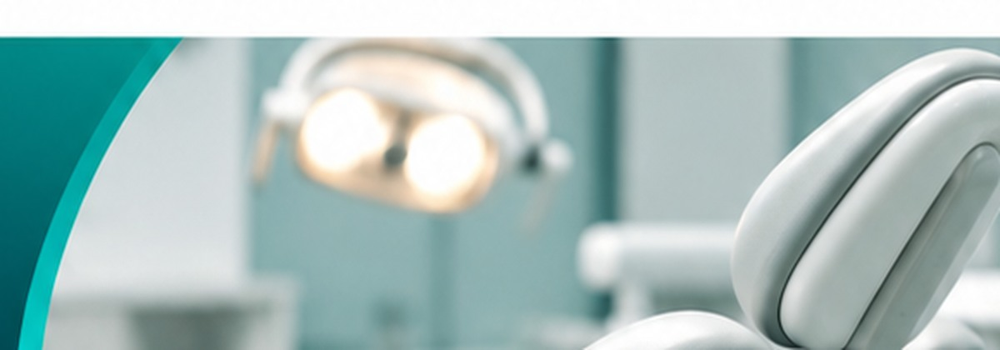

Consultórios equipados
Salas clínicas organizadas e equipadas para diferentes necessidades de Medicina Dentária.
Ambientes modernos, consultórios equipados e espaços preparados para oferecer conforto, segurança e qualidade em cada etapa do atendimento.
Agendar uma visita →
DCI · Porto, PortugalPlaneámos uma clínica com consultórios modernos e totalmente equipados, onde são realizados os atendimentos. Adotamos rigorosos processos de qualidade e biossegurança para proporcionar tranquilidade durante os tratamentos. Cada espaço foi pensado para acolher pacientes, apoiar a equipa clínica e promover uma experiência segura e personalizada.





Mais do que um espaço físico, uma estrutura pensada para apoiar o cuidado e a experiência de cada pessoa.
Salas clínicas organizadas e equipadas para diferentes necessidades de Medicina Dentária.
Receção e sala de espera preparadas para receber pacientes com conforto e atenção.
Processos de trabalho orientados para a higiene, segurança e tranquilidade nos atendimentos.
Área dedicada à partilha de conhecimento e à formação de profissionais de saúde.

Conhecimento e cuidado ao serviço da saúde oralO espaço é apenas parte da experiência. Na DCI, o atendimento é realizado por profissionais qualificados, com uma abordagem multidisciplinar e atenção às necessidades de cada paciente.
Estamos na Rua 5 de Outubro, 257. Entre em contacto para obter informações ou agendar a sua visita.
Fale connosco →Rua 5 de Outubro, 257
4100-175 Porto | Portugal